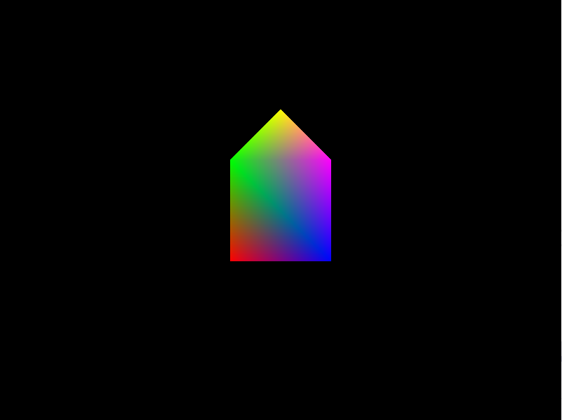
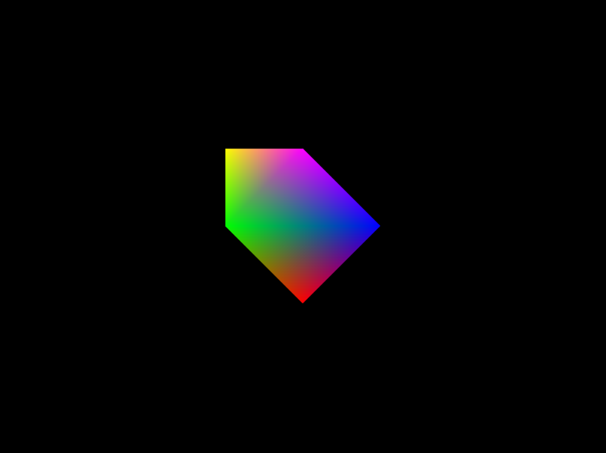
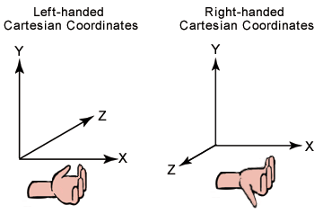
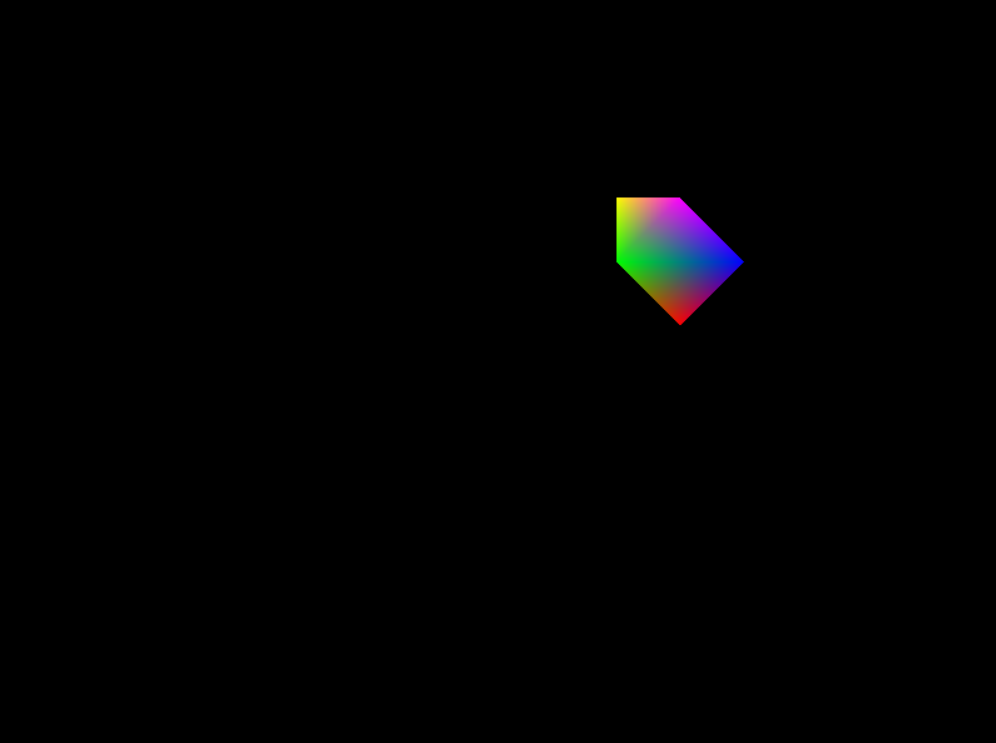
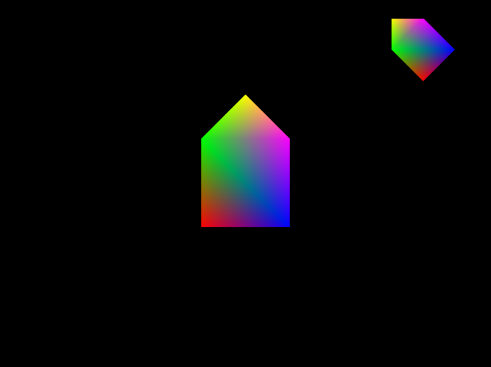

COMP 2501 - Winter 2014 Tutorial #3
Transformations
Description:
The purpose of this tutorial is to familiarize yourself with matrix transformations in 2D space.
To get credit for the tutorial you must complete, or make significant progress, on the problems provided and demonstrate your results to the tutorial TA.
If you cannot complete the tutorial in the time allotted you may demonstrate the completed results to the TA during their office hours.
These tutorials are based on the Rastertek set of tutorials.
Instructions:
Overview
Open Microsoft Visual Studio 2012 and open the project found in the tutorial3 folder. Run the project (hit F5), it should build and open a window containing the rainbow house we created during Tutorial 1. For the purpose of this tutorial, the "rainbow house" will actually be a robot body. You will have to use your imagination. You can close this window by pressing Esc.

Take a look at graphicsclass.cpp. This code handles all the DirectX11 graphics code.
Check out the Render() method. This method is called once a frame and is responsible for sending our three important matrices (World, View, Projection) off to our shader class, which in turn relays them to the shaders themselves. We will be focusing on World matrices for this tutorial.
Notice these lines:
// Get the world, view, and projection matrices from the camera and d3d objects.
m_Camera->GetViewMatrix(viewMatrix);
m_D3D->GetWorldMatrix(worldMatrix);
m_D3D->GetProjectionMatrix(projectionMatrix);
We grab the default versions of each of our matrices and store them in local variables. We then send those matrices off to our shader class for rasterization:
// Render the model using the color shader.
result = m_ColorShader->Render(m_D3D->GetDeviceContext(), m_Model->GetIndexCount(), worldMatrix, viewMatrix, projectionMatrix);
After storing the matrices in local variables, and before sending them off to the shader, we can perform all manner of transformations on them.
Add the following lines in between the two code snippets above:
// World transformations
XMStoreFloat4x4( &worldMatrices[0], XMMatrixRotationZ(XM_PI/4) );
Now run the application. You should see your robot body transformed like this:

We've rotated our robot body by 45 degrees about the Z axis. Notice we used radians in the actual rotation, DirectX requires this. Also notice the direction in which the robot body was rotated. DirectX uses a left handed coordinate system. This means that rotations are applied in a counter-clockwise manner and that the positive direction along the Z axis points towards the screen.

This diagram explains left and right handed coordinate systems. Lay either hand out flat in front of you, then curl your fingers in. The direction your thumb points is the positive z-axis and the direction your fingers curl is the direction of rotations in the system.
Problem 1)
A single matrix can represent multiple transformations. We will be storing all of our world transformations in our worldMatrix. To combine multiple transformations, we multiple the transformation matrices together.
Using XMMatrixScaling and XMMatrixTranslation, scale your robot body to half its size and then translate it to the top right of the screen. You will have to play with the x and y values to get the shape properly situated.
The Microsoft website is an excellent resource to look up any functions you'd like to know more about. You may want to look up the following functions:
After running the application you should produce a screen like this:
The order in which we multiple our transformation matrices matters. This is because matrices are not commutative. This means that, in general, in matrix multiplication: AB != BA. Try reversing the order of the matrices. Notice the difference:

See if you can reason out why the final placement of the shape was not the same regardless of the order of operations. Try simulating the operations in order by hand or in your head.
In general, we use the acronym ISROT (Identity, Scale, Rotation, Orbit, Translation) to determine which order we should perform our transformations in. Theoretically, this order is the easiest to understand and mentally plot.
Problem 2)
Add a second shape to the mix. The code is set up in a way that it should be relatively easy to add the second shape. We use the same model (vertices) as the robot body, but we use a new world matrix. You will need to increment the number of world matrices and use the Identity matrix ( XMMatrixIdentity() ) as a new entry in our worldMatrices array. The result should look like this:

Problem 3)
Instead of using the Identity matrix for the second shape, use the world matrix from the robot body.
Note: XMStoreFloat4x4 requires an XMMatrix as its second argument. Our world matrix from the first shape is of type XMFloat4x4. To convert between XMMatrix and XMFloat4x4 we use the XMLoadFloat4x4 method and pass it a reference to the world matrix.
Your program should now display this:
As you can see, it looks as though we are only drawing our robot body. This is not the case, we are in fact drawing both shapes, just one on top of the other. The transform of the second shape relative to the first shape is called a hierarchical transformation. Try applying transforms to the second shape, all the while multiplying by the world matrix from the first shape. Make sure you multiply by the robot body's matrix last.
See if you can recreate the transformation depicted below. We have positioned our second shape as the left upper arm of our robot.
Remember that each transformation is applied relative to the parent transform (the robot body's matrix). Therefore, for example, scaling uniformly by 0.5 will make our upper armhalf the size of our robot body, not half the size of our original coordinate system.
Problem 4)
We're going to add a lower arm to the robot and make it orbit around the joint (the "elbow") that attaches it to the upper arm.
To start, add a lower arm to the robot. Set it up like the following:
The point between the triangles of the upper and lower arms will form an elbow.
Once you have the shapes in place, rotate the lower arm around the arm joint, as a normal arm would rotate around the elbow. To do this, add a new calculation after the transformations that position the upper arm. For example (your code may use different numbers):
// Transformation to move the lower arm into position
XMStoreFloat4x4( &worldMatrices[2], XMMatrixRotationZ(XM_PI/2) * XMMatrixTranslation(2.0f, 2.0f, 0.0f) * XMLoadFloat4x4(&worldMatrices[1]) );
// Transformation to rotate lower arm around joint
XMStoreFloat4x4( &worldMatrices[2], XMMatrixRotationZ(XM_PI/2) * XMLoadFloat4x4(&worldMatrices[2]) );
Notice now that our rotation has not functioned as intended:
The rotation has occurred around the center of our lower arm. What we wanted was for the rotation to occur about the joint of the arm. This is what's called an orbit, and there is a specific way of doing this that can be represented by this series of multiplications:
O = T^(-1)RT
In words, we translate the shape so that the origin of our coordinate system is over the point we'd like to rotate around. We then perform the rotation. We then translate the shape back to its original position.
See if you can rotate the lower arm about the elbow using this knowledge.
Your finished product should look something like this: